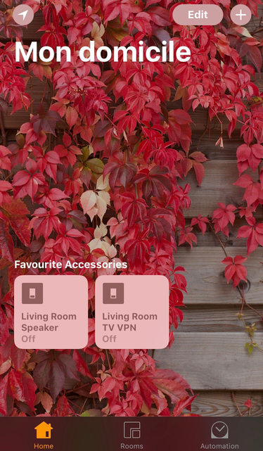

Control your accessories from Home Assistant with Siri and HomeKit
While reading more about Home Assistant, I discovered it was possible to control your accessories from Home Assistant with Siri and HomeKit. I decided to give that a try.
This requires to install Homebridge and the homebridge-homeassitant plugin.
Install Homebridge
Homebridge is a lightweight NodeJS server that emulates the iOS HomeKit API. Let's install it in the same LXC container as Home Assistant:
root@turris:~# lxc-attach -n homeassistant
I followed the Running HomeBridge on a Raspberry Pi page.
We need curl and git:
root@homeassistant:~# apt-get install -y curl git
Install Node:
root@homeassistant:~# curl -sL https://deb.nodesource.com/setup_6.x | bash - ## Installing the NodeSource Node.js v6.x repo... ## Populating apt-get cache... root@homeassistant:~# apt-get install -y nodejs
Install avahi and other dependencies:
root@homeassistant:~# apt-get install -y libavahi-compat-libdnssd-dev
Install Homebridge and dependencies still following this page. Note that I had a strange problem here. The npm command didn't produce any output. I found the same issue on stackoverflow and even an issue on github. The workaround is just to open a new terminal...
root@homeassistant:~# npm install -g --unsafe-perm homebridge hap-nodejs node-gyp root@homeassistant:~# cd /usr/lib/node_modules/homebridge/ root@homeassistant:/usr/lib/node_modules/homebridge# npm install --unsafe-perm bignum root@homeassistant:/usr/lib/node_modules/homebridge# cd ../hap-nodejs/node_modules/mdns/ root@homeassistant:/usr/lib/node_modules/hap-nodejs/node_modules/mdns# node-gyp BUILDTYPE=Release rebuild
Install and configure homebridge-homeassistant plugin
root@homeassistant:/usr/lib/node_modules/hap-nodejs/node_modules/mdns# cd root@homeassistant:~# npm install -g --unsafe-perm homebridge-homeassistant
Try to start Homebridge:
root@homeassistant:~# su -s /bin/bash homeassistant homeassistant@homeassistant:~$ homebridge
Homebridge won't do anything until you've created a configuration file. So press CTRL-C and create the file ~/.homebridge/config.json:
homeassistant@homeassistant:~$ cat <<EOF >> ~/.homebridge/config.json
{
"bridge": {
"name": "Homebridge",
"username": "CC:22:3D:E3:CE:30",
"port": 51826,
"pin": "031-45-154"
},
"platforms": [
{
"platform": "HomeAssistant",
"name": "HomeAssistant",
"host": "http://localhost:8123",
"logging": false
}
]
}
EOF
Note that you can change the username and pin code. You will need the PIN code to add the Homebridge accessory to HomeKit.
Check the Home Assistant plugin page for more information on how to configure the plugin.
Automatically start Homebridge
Let's configure systemd. Create the file /etc/systemd/system/home-assistant@homebridge.service:
root@homeassistant:~# cat <<EOF >> /etc/systemd/system/home-assistant@homebridge.service [Unit] Description=Node.js HomeKit Server After=syslog.target network-online.target [Service] Type=simple User=homeassistant ExecStart=/usr/bin/homebridge -U /home/homeassistant/.homebridge Restart=on-failure RestartSec=10 KillMode=process [Install] WantedBy=multi-user.target EOF
Enable and launch Homebridge:
root@homeassistant:~# systemctl --system daemon-reload root@homeassistant:~# systemctl enable home-assistant@homebridge Created symlink from /etc/systemd/system/multi-user.target.wants/home-assistant@homebridge.service to /etc/systemd/system/home-assistant@homebridge.service. root@homeassistant:~# systemctl start home-assistant@homebridge
Adding Homebridge to iOS
Homebridge and the Home Assistant plugin are now running. Using the Home app on your iOS device, you should be able to add the accessory "Homebridge". See Homebridge README for more information. You will need to enter the PIN code defined in your config.json file.
You should then see the Homebridge bridge on your device:

And it will automatically add all the accessories defined in Home Assistant!
You can now even use Siri to control your devices, like turning ON or OFF the TV VPN.

Note that I renamed the original switch to make it easier to pronounce. As described in the README, avoid names usually used by Siri like "Radio" or "Sonos".
That's it! Homebridge is really a nice addition to Home Assistant if you have some iOS devices at home.
Comments
Comments powered by Disqus